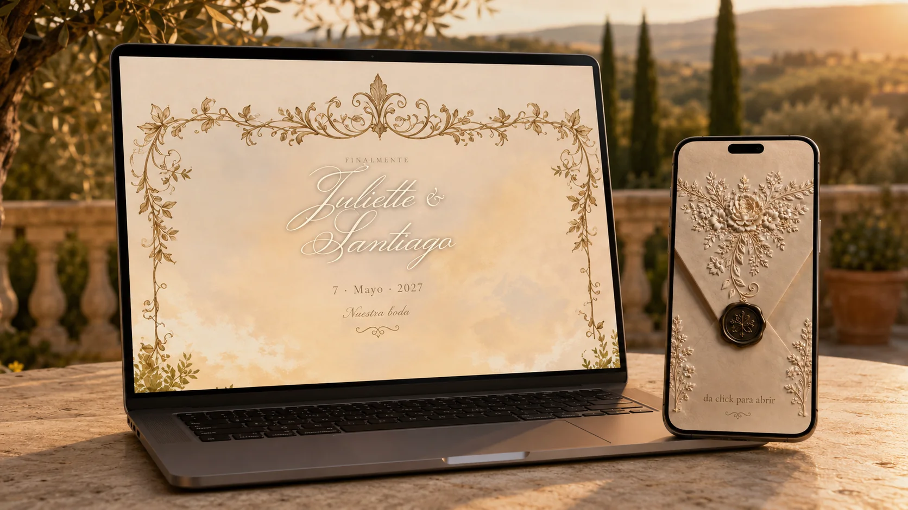

Ver página completa
BODA · INVITACIÓN DIGITAL
Boda Toscana
Una invitación romántica inspirada en la Toscana, con paisajes cálidos, papel artesanal y ornamentos botánicos en tonos marfil y dorado. La experiencia comienza con un sobre interactivo y presenta la celebración con elegancia atemporal.
Esta página contiene
- Sobre interactivo
- Música
- Cuenta regresiva
- Detalles del evento
- Ubicación en mapa
- Itinerario
- Código de vestimenta
- Mesa de regalos
- Confirmación de asistencia
- Diseño responsivo